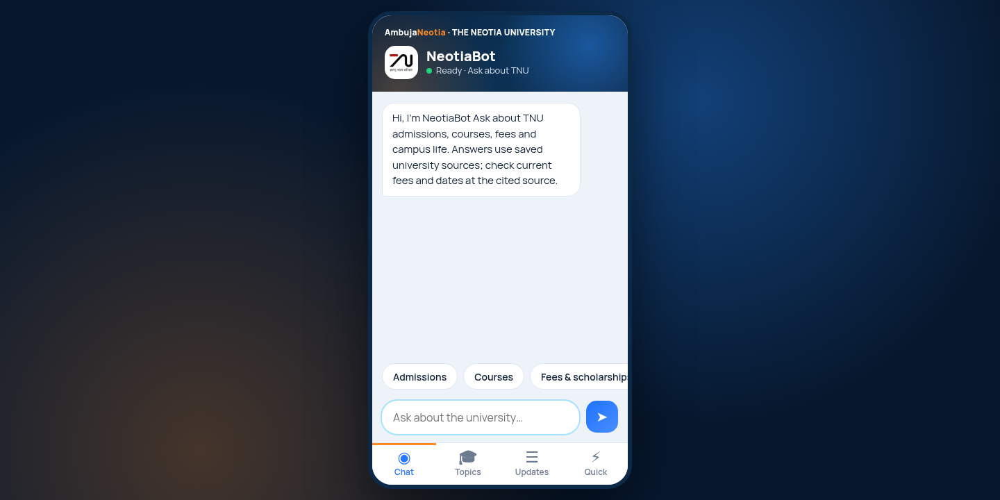

// Case study 03 · Live · AI
NEOTIABOT
An admissions Q&A chatbot that answers only from sourced pages and brochures, with citations.

NeotiaBot demo
What it is
An independent demo of a retrieval chatbot. It answers admission questions only from a stored set of scraped web pages and brochures, shows which source each answer came from, and refuses to guess. Scanned brochures went through OCR once at build time. Retrieval is keyword based with titles and topics boosted, which fits the free 512 MB hosting.
Public source snapshot has no credentials or old history.
Highlights
15 admission PDFs, saved OCR text and a 212-page website snapshot
Text split into 125-word source-linked chunks (about 2,950 in total)
Lexical keyword ranking with alias and topic-aware filtering, no vector database and no embeddings
Gemini answers only from the ranked evidence, with citations to the source and page
Refuses questions the sources do not support
Mobile app style interface
Free hosting that sleeps when idle, so the first load can take about a minute
212pages indexed
15admission PDFs
125words per chunk
// Challenges solved
A retrieval gap: B.Tech Computer Science info was in the index, but words like 'offer' and 'keep the answer short' were mistaken for part of the course name, so the bot refused. The matching logic was fixed and regression checks added
Memory limits on free hosting ruled out embeddings, so retrieval is keyword based and still answers with sources
PythonFlaskGunicornPyMuPDFGeminiRender